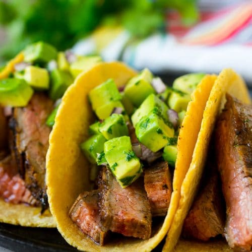

Morning Tacos

Recipe:
Ingredients
-
4 corn tortillas
-
1/2 avocado
-
4oz ribeye steak
-
1/4 cup cilantro
-
1/8 cup diced jalapenos
Steps
-
Grill tortillas till crispy
-
Cook steak to medium-rare
-
Mix avocado, cilantro, and
jalapaneos into paste
-
Smear paste on each grilled tortilla
-
Place 1 oz of thinnly cut steak on each tortilla
-
Enjoy!